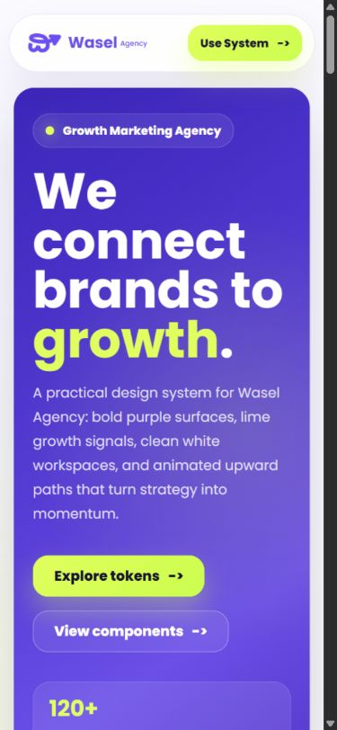
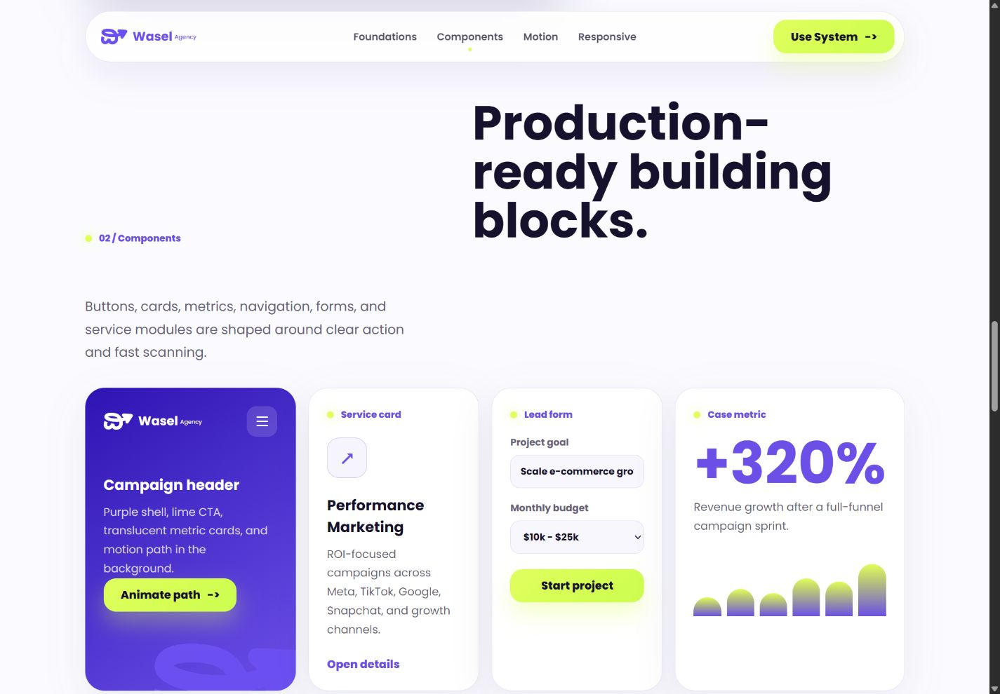

Reusable foundations
Colour, typography and identity rules establish the system’s base.
UI & design systems
A practical interface system for Wasel Agency, extending its identity into digital components.
Colour and typography foundations, reusable components, responsive examples and a motion language create a consistent framework for future pages.
HTML5 / CSS3 / JavaScript / SVG / Intersection Observer
Colour, typography and identity rules establish the system’s base.
Cards, buttons and layout examples demonstrate a consistent UI vocabulary.
SVG, CSS and native scroll observation introduce key elements progressively.


